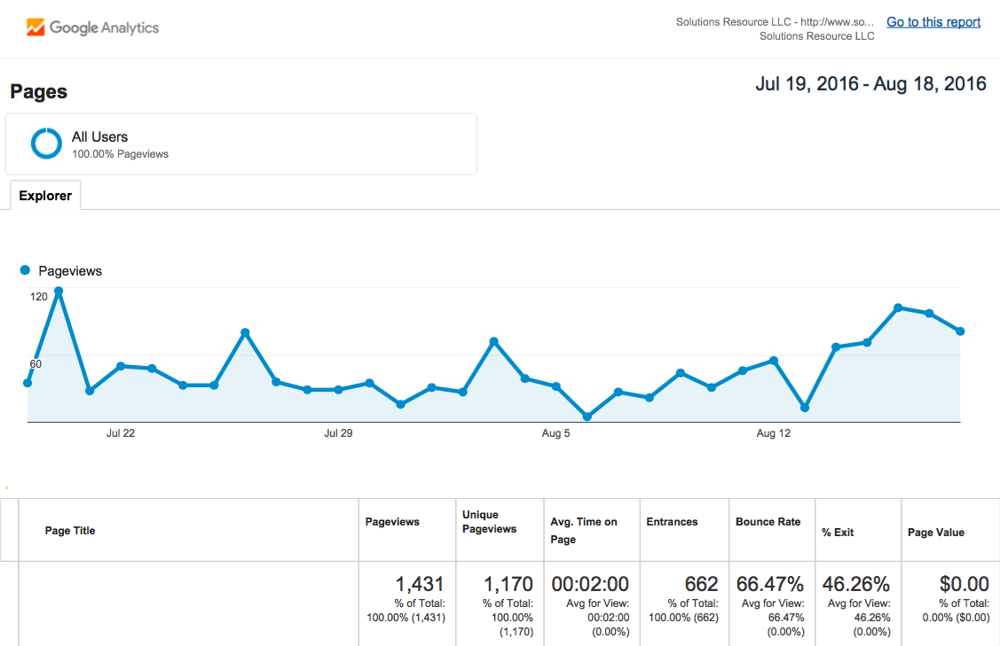
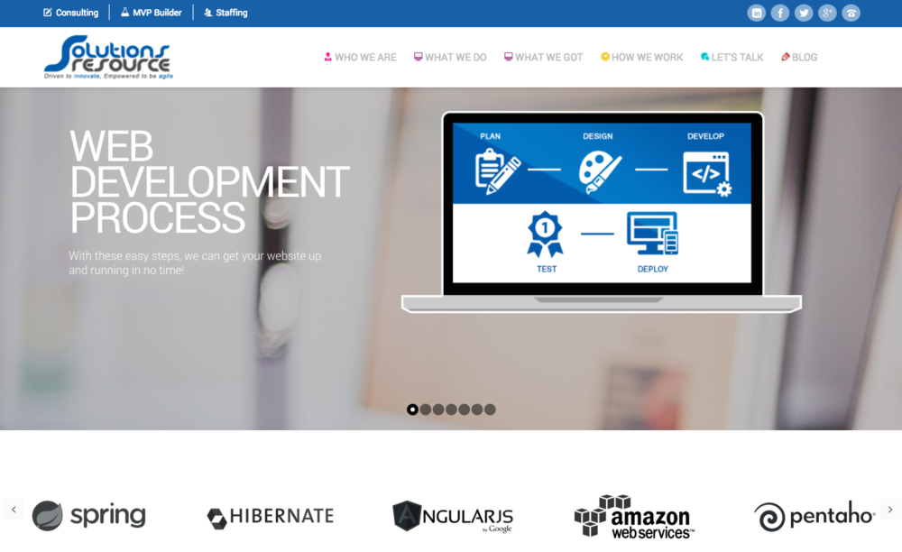
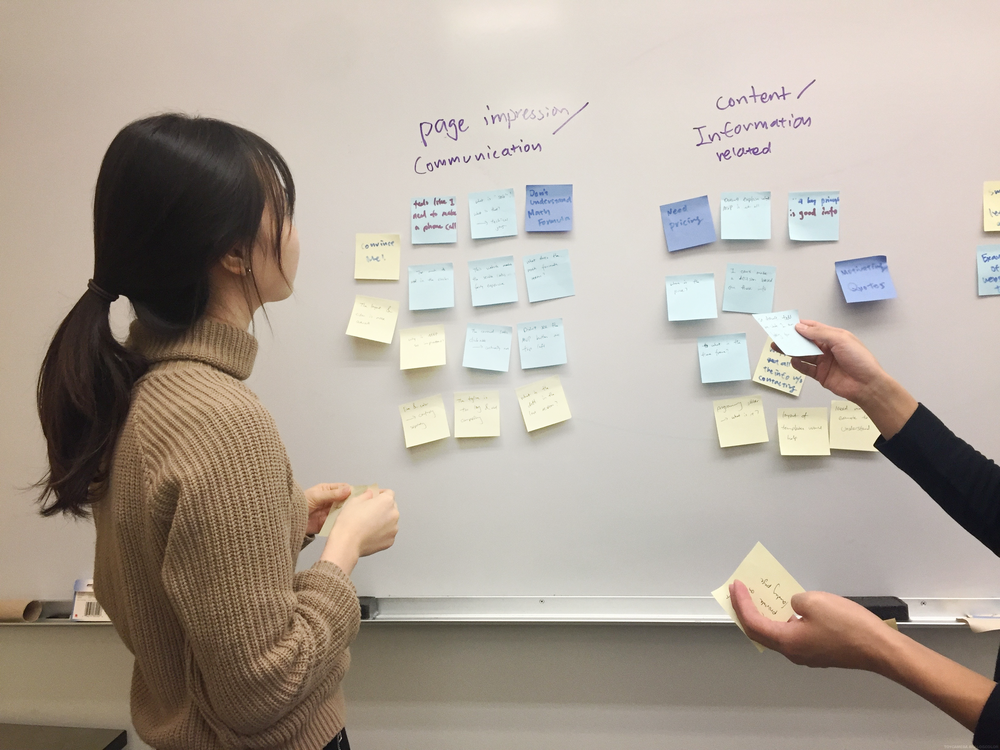
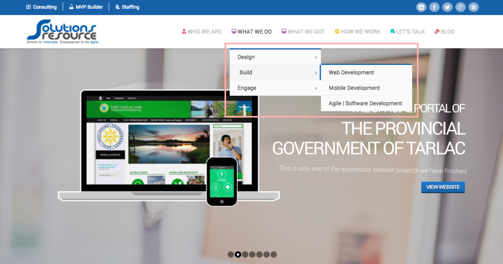
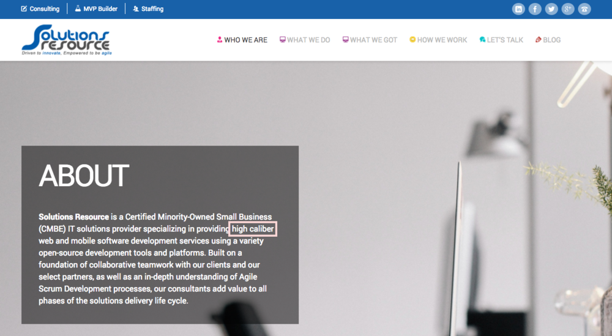
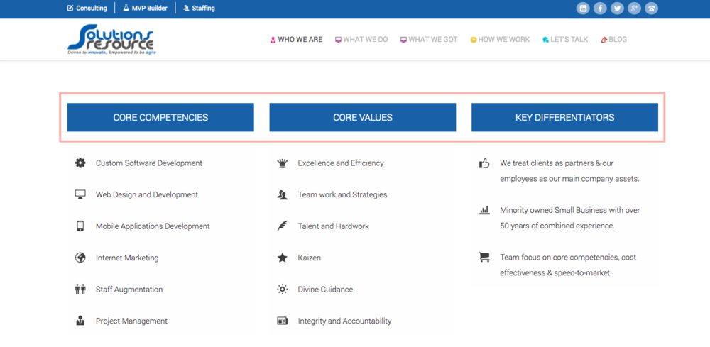
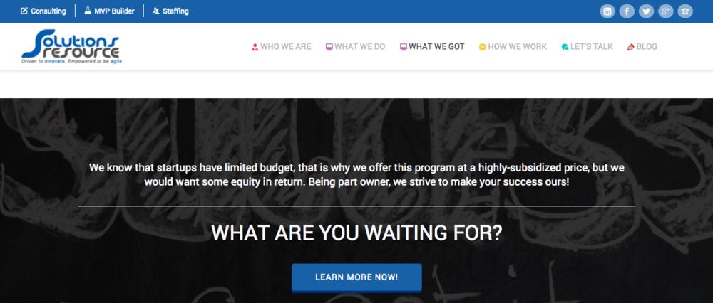

Overview
This project was done as part of my internship at Solutions Resource, a software engineering company that builds web and mobile applications for clients. With another UX designer, we conducted user research, usability testing, and created low and high fidelity mockups with some design recommendations.
Problem & Goal
So, how did this project start? One day, our CEO told us, “Hey! I think our website is old and I want to redesign!” However, “old” isn’t really a problem because there are many old websites that works perfectly fine. So what really is the problem we need to solve? We first looked up our website's Google Analytics, and we discovered that there is a very high bounce rate (66.47%) based on Google Analytics. This was definitely an issue we need to tackle, and it also gave us a clear goal, which is to lower the bounce rate.
Research
We started off by learning about what the company wants to convey through their website. In order to do so, we interviewed our CEO to gain more information about company goals, main services, and other important facts to highlight.
Heuristic Evaluation
Based on our design objectives, we conducted an heuristic evaluation with a guidance of Nielsen Norman Group heuristics. Our goal here was to examine what extent did the website successfully served CEO's goal. Below are our findings.
1. Consistency
The big section in the middle, which is the first thing users see was inconsistent. In this section, there were 7 pages, which included the company's past projects, services, programs, and general mobile/web development process.
2. Clarity
The menu icons on the top right didn't communicate clearly about what each title is about due to its size and use of the same icon for two titles, "What We Do" and "What We Got". Also, the color of icons were very colorful, which didn't align with company's color, blue.

Additionally, considering that all people coming to this website aren't familiar with programming languages and platforms, the contents of the bottom section weren't clear since there weren't any labels or descriptions.
3. Not Selling Services
On the right image, you can see the company's "Web Design" page. Although it is one of their main services they want to sell to customers, this page wasn't successfully communicating the intention. As you can see, the main information you can get out of this page is the knowledge in web design. It is more effective to describe the company's service rather than describing website design principles in general.
Usability Testing
In order to hear voice from actual/potential users, we recruited three participants: two current clients of the company and one potential user. Then, we conducted usability tests remotely and in-person.Below are tasks and Questions we asked participants at each session:
-
Take 30 seconds to look at the landing page, then describe what this page is about.
-
How do you feel when you see the landing page?
-
On a scale from 1 to 5 (1 = not convincing, 5 = very convincing), how convinced are you to hire Solutions Resource to build your product? Why?
After all of the sessions were done, we did affinity analysis to organize our findings and find out what are themes by grouping them
Findings
And, here are the main findings from our analysis 👇🏻
1. Users couldn't tell what Solutions Resource does from the landing page. Participants were confused what the company does because the website only introduced about their service in a secondary menu bar.
2. Several pages included technical jargons participants weren't familiar with. (e.g. "high caliber web")
3. Some design elements confused participants. For example, on "Who We Are" page, subtitles were in blue boxes, which looks like a button.
4. Participants weren't convinced to contact the company because the website lacks of information about price and duration. This information is crucial because it contributes to audiences' decision making.
Redesign Process
Based on the findings, we defined our design goals to be:
-
Clearly communicate what Solutions Resource does on landing page
-
all of the contents need to serve a purpose, selling the company's products
-
improve visual elements
We started off by sketching out our ideas in order to brainstorm what features we want to incorporate. Then, we created low-fidelity mockup, so that we can talk to our CEO as well as participants who we talked to during usability testings to test the new layout of the website and get feedbacks. Based on the feedbacks we received, we created low-fidelity mockup version 2.
Feedback we received:
It doesn't make sense to search for programs before learning about what the company does.About us isn't necessary on landing page.The page is pretty long.
Things we changed:We moved the program suggestion feature to the bottom so users can learn about the company first, and then look for programs.We came up with a sentence describing what the company does and put that on the first section so users would easily and quickly understand what the company does.
After finalizing all of the features, we created high-fidelity mockup! We made sure that the design is clean, and has blue as their brand color is blue.
Result
We curated all of our findings and recommendations into one document, and we presented to our CEO. He was very satisfied with the outcome, and he handed the document over to an engineering team for development.